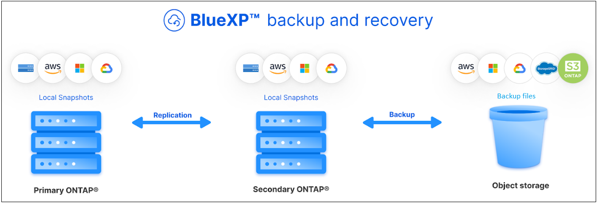

Notas de la versión
Notas de la versión
Protege tus datos de volúmenes de ONTAP con backup y recuperación de BlueXP
 Sugerir cambios
Sugerir cambios
El servicio de backup y recuperación de datos de BlueXP ofrece funcionalidades de backup y restauración para proteger y archivar a largo plazo los datos de sus volúmenes de ONTAP. Puede implementar una estrategia 3-2-1 donde tiene 3 copias de los datos de origen en 2 sistemas de almacenamiento diferentes junto con una copia 1 en el cloud.
Tras la activación, el backup y la recuperación crean backups incrementales permanentes de bloques que se almacenan en otro clúster de ONTAP y en el almacenamiento de objetos en el cloud. Además del volumen de origen, dispone de:
-
Copia Snapshot del volumen en el sistema de origen
-
Se replica el volumen en un sistema de almacenamiento diferente
-
Backup del volumen en el almacenamiento de objetos

El backup y la recuperación de datos de BlueXP aprovecha la tecnología de replicación de datos de SnapMirror de NetApp para garantizar que todos los backups estén totalmente sincronizados creando copias de Snapshot y transfiriéndolas a las ubicaciones de backup.
Algunas de las ventajas del enfoque de 3-2-1 son las siguientes:
-
Múltiples copias de datos proporcionan protección multicapa contra amenazas de ciberseguridad internas (internas) y externas.
-
Varios tipos de medios garantizan la viabilidad de la conmutación al nodo de respaldo en caso de fallo físico o lógico de un tipo de medio.
-
La copia in situ facilita la restauración rápida, con copias externas listas en caso de que la copia in situ esté comprometida.
Cuando sea necesario, puede restaurar un volume entero, una folder o uno o varios files, desde cualquiera de las copias de seguridad en el mismo entorno de trabajo o en otro diferente.
Funciones
-
Características de replicación:*
-
Replicar datos entre sistemas de almacenamiento de ONTAP para permitir las operaciones de backup y recuperación ante desastres.
-
Garantice la fiabilidad de su entorno de recuperación ante desastres con una gran disponibilidad.
-
Cifrado ONTAP en vuelo nativo configurado mediante clave precompartida (PSK) entre los dos sistemas.
-
Los datos copiados son inmutables hasta que sean editables y estén listos para su uso.
-
La replicación se repara automáticamente en caso de fallo de transferencia.
-
En comparación con el "Servicio de replicación de BlueXP", La replicación en el backup y la recuperación de BlueXP incluye las siguientes características:
-
Replique varios volúmenes de FlexVol de una vez en un sistema secundario.
-
Restaure un volumen replicado en el sistema de origen o en otro sistema mediante la interfaz de usuario de.
-
Gestionar políticas de replicación
-
Consulte "Limitaciones de replicación" Para acceder a una lista de funciones de replicación que no están disponibles con el backup y la recuperación de datos de BlueXP.
-
Copia de seguridad a las características del objeto:*
-
Realice backups de copias independientes de sus volúmenes de datos en un almacenamiento de objetos de bajo coste.
-
Aplique una única política de backup a todos los volúmenes de un clúster o asigne diferentes políticas de backup a los volúmenes que tengan objetivos de punto de recuperación únicos.
-
Cree una política de backup que se aplicará a todos los volúmenes futuros que se creen en el clúster.
-
Cree archivos de backup inmutables para que estén bloqueados y protegidos durante el período de retención.
-
Analice archivos de copia de seguridad para detectar posibles ataques de ransomware y quite/reemplace automáticamente las copias de seguridad infectadas.
-
Apilar los archivos de backup antiguos en el almacenamiento de archivado para ahorrar costes.
-
Elimine la relación de backup para poder archivar volúmenes de origen innecesarios y retener backups de volúmenes.
-
Realice backups de un cloud a otro y desde sistemas en las instalaciones a un cloud público o privado.
-
Los datos de los backups se protegen con conexiones HTTPS en reposo con cifrado AES de 256 bits y TLS 1.2.
-
Utilice sus propias claves gestionadas por el cliente para el cifrado de datos en lugar de utilizar las claves de cifrado predeterminadas de su proveedor de cloud.
-
Permite hasta 4,000 backups de un único volumen.
-
Restaurar características:*
-
Restaura datos desde un momento específico a partir de copias Snapshot locales, volúmenes replicados o backups de volúmenes en el almacenamiento de objetos.
-
Restaure un volumen, una carpeta o archivos individuales, al sistema de origen o a otro sistema.
-
Restaure los datos a un entorno de trabajo utilizando una cuenta o suscripción diferente o que se encuentre en una región diferente.
-
Capacidad para realizar una restauración rápida de un volumen desde un almacenamiento en cloud a un sistema Cloud Volumes ONTAP o a un sistema en las instalaciones; perfecto para situaciones de recuperación ante desastres en las que necesita ofrecer acceso a un volumen lo antes posible.
-
Los datos se restauran en el nivel de bloque, colocando los datos directamente en la ubicación especificada, siempre que se conservan las ACL originales.
-
Catálogos de archivos que se pueden examinar y realizar búsquedas para seleccionar fácilmente carpetas y archivos individuales para restaurar un solo archivo.
Entornos de trabajo compatibles para operaciones de backup y restauración
El backup y la recuperación de BlueXP admite entornos de trabajo de ONTAP y proveedores de nube pública y privada.
Destinos de backup admitidos
El backup y la recuperación de datos de BlueXP te permite realizar backups de volúmenes de ONTAP desde los siguientes entornos de trabajo de origen en los siguientes entornos de trabajo secundarios y almacenamiento de objetos en proveedores de cloud público y privado. Las copias Snapshot residen en el entorno de trabajo de origen.
| Entorno de trabajo de fuente | Entorno de trabajo secundario (Replicación) | Almacén de objetos de destino (copia de seguridad) |
|---|---|---|
Cloud Volumes ONTAP en AWS |
Cloud Volumes ONTAP en AWS |
Endif de Amazon S3::aws[] ifdef::Azure[] |
Cloud Volumes ONTAP en Azure |
Cloud Volumes ONTAP en Azure |
Endif de Azure Blob::Azure[] ifdef::gcp[] |
Cloud Volumes ONTAP en Google |
Cloud Volumes ONTAP en Google |
Fin de Google Cloud Storage::gcp[] |
Sistema ONTAP en las instalaciones |
Cloud Volumes ONTAP |
ifdef::aws[] |
Destinos de restauración admitidos
Es posible restaurar datos ONTAP desde un archivo de backup que se encuentra en un entorno de trabajo secundario (un volumen replicado) o en almacenamiento de objetos (un archivo de backup) para los siguientes entornos de trabajo. Las copias Snapshot residen en el entorno de trabajo de origen y se pueden restaurar únicamente en ese mismo sistema.
| Ubicación del archivo de copia de seguridad | Entorno de trabajo de destino | |
|---|---|---|
Almacén de objetos (Backup) |
Sistema secundario (Replicación) |
ifdef::aws[] |
Amazon S3 |
Cloud Volumes ONTAP en AWS |
Cloud Volumes ONTAP en la endif del sistema ONTAP en las instalaciones de AWS::aws[] ifdef::Azure[] |
Azure Blob |
Cloud Volumes ONTAP en Azure |
Cloud Volumes ONTAP en Azure on-premises ONTAP system endif::Azure[] ifdef::gcp[] |
Google Cloud Storage |
Cloud Volumes ONTAP en Google |
Cloud Volumes ONTAP en Google on-local ONTAP system endif::gcp[] |
StorageGRID de NetApp |
Sistema ONTAP en las instalaciones |
Sistema ONTAP en las instalaciones |
ONTAP S3 |
Sistema ONTAP en las instalaciones |
Sistema ONTAP en las instalaciones |
Tenga en cuenta que las referencias a "sistemas ONTAP en las instalaciones" incluyen sistemas FAS, AFF y ONTAP Select.
Volúmenes compatibles
El backup y la recuperación de BlueXP admiten los siguientes tipos de volúmenes:
-
Volúmenes FlexVol de lectura y escritura
-
FlexGroup Volumes (requiere ONTAP 9.12.1 o posterior)
-
SnapLock Enterprise Volumes (requiere ONTAP 9.11.1 o posterior)
-
Volúmenes de cumplimiento de normativas de SnapLock (requiere ONTAP 9,14 o posterior)
-
Volúmenes de destino de protección de datos (DP) de SnapMirror
Consulte las secciones de "Limitaciones de backup y restauración" para requisitos y limitaciones adicionales.
Coste
Existen dos tipos de costes asociados al uso del backup y la recuperación de datos de BlueXP con los sistemas ONTAP: Los cargos por recursos y los cargos por servicio. Ambos cargos son para la copia de seguridad en la parte objeto del servicio.
No se cobra ningún cargo por crear copias de Snapshot o volúmenes replicados, aparte del espacio en disco necesario para almacenar las copias de Snapshot y los volúmenes replicados.
gastos de recursos
El proveedor de cloud paga los recursos por la capacidad de almacenamiento de objetos y por la escritura y lectura de archivos de backup en el cloud.
-
Para Backup en el almacenamiento de objetos, paga a su proveedor de cloud por los costes de almacenamiento de objetos.
Como el backup y la recuperación de datos de BlueXP conserva las eficiencias de almacenamiento del volumen de origen, usted paga los costes de almacenamiento de objetos del proveedor de cloud para las eficiencias después de la ONTAP de los datos (para una menor cantidad de datos después de aplicar la deduplicación y la compresión).
-
Para restaurar datos con la opción de búsqueda y restauración, el proveedor de cloud aprovisiona determinados recursos y hay un coste por TIB asociado con la cantidad de datos que escanean sus solicitudes de búsqueda. (Estos recursos no son necesarios para examinar y restaurar.)
-
En AWS, "Amazon Athena" y.. "Pegamento de AWS" Los recursos se implementan en un nuevo bloque de S3.
-
-
Si piensa restaurar datos de volumen desde un archivo de backup que se ha movido al almacenamiento de objetos archivados, el proveedor de cloud tendrá una tarifa por recuperación por GiB y una tarifa por solicitud.
-
Si tiene pensado analizar un archivo de backup en busca de ransomware durante el proceso de restauración de datos de volumen (si ha habilitado DataLock y Ransomware Protection para sus backups en el cloud), también incurrirá en costes adicionales de salida de su proveedor de cloud.
cargos por servicio
Los cargos por servicio se pagan a NetApp y cubren tanto el coste de create backups en el almacenamiento de objetos como de restore volúmenes, o archivos, a partir de dichos backups. Solo debe pagar por los datos que protege en el almacenamiento de objetos, calculados mediante la capacidad usada lógica de origen (before ONTAP efficiencies) de los volúmenes ONTAP de los que se realizan backups en el almacenamiento de objetos. Esta capacidad también se conoce como terabytes de interfaz (FETB).
El servicio de backup consta de tres formas de pago. La primera opción es suscribirse a su proveedor de cloud, lo que le permite pagar por mes. La segunda opción es conseguir un contrato anual. La tercera opción consiste en adquirir licencias directamente a NetApp. Lea la Licencia para obtener más información.
Licencia
El backup y la recuperación de datos de BlueXP están disponibles con los siguientes modelos de consumo:
-
BYOL: Una licencia comprada a NetApp que se puede usar con cualquier proveedor de cloud.
-
PAYGO: Una suscripción por hora desde el mercado de su proveedor de la nube.
-
Anual: Un contrato anual del mercado de su proveedor de cloud.
Una licencia de backup solo se requiere para backup y restauración desde el almacenamiento de objetos. La creación de copias Snapshot y volúmenes replicados no requiere una licencia.
Con su propia licencia
BYOL está basada en término (1, 2 o 3 años) en capacidad y en incrementos de 1 TiB. Usted paga a NetApp para que utilice el servicio por un período de tiempo, digamos 1 año, y por una cantidad máxima, digamos 10 TIB.
Recibirás un número de serie que introduzcas en la página de la cartera digital de BlueXP para habilitar el servicio. Cuando se alcance cualquiera de los límites, deberá renovar la licencia. La licencia BYOL de copia de seguridad se aplica a todos los sistemas de origen asociados a su "Cuenta BlueXP".
Suscripción de pago por uso
El backup y la recuperación de BlueXP ofrece licencias basadas en el consumo en un modelo de pago por uso. Después de suscribirse a través del mercado de su proveedor de cloud, paga por GIB los datos de los que se ha realizado el backup: No hay ningún pago por adelantado. Su proveedor de cloud se le factura con cargo mensual.
Tenga en cuenta que está disponible una prueba gratuita de 30 días cuando se inscriba inicialmente con una suscripción a PAYGO.
Contrato anual
Al utilizar AWS, hay dos contratos anuales disponibles para 1, 2 o 3 años:
-
Un plan de "Backup en el cloud" que le permite realizar backups de datos de Cloud Volumes ONTAP y de datos de ONTAP en las instalaciones.
-
Un plan «CVO Professional» que te permite agrupar el backup y la recuperación de datos de Cloud Volumes ONTAP y BlueXP. Esto incluye backups ilimitados de volúmenes de Cloud Volumes ONTAP cargados con esta licencia (la capacidad de backup no se cuenta con la licencia).
Funcionamiento del backup y la recuperación de BlueXP
Cuando habilita el backup y la recuperación de BlueXP en un sistema Cloud Volumes ONTAP o ONTAP en las instalaciones, el servicio realiza un backup completo de sus datos. Tras el primer backup, todos los backups adicionales son incrementales, lo que significa que solo se realiza un backup de los bloques modificados y los nuevos bloques. De este modo se minimiza el tráfico de red. El backup en el almacenamiento de objetos se crea sobre "Tecnología SnapMirror Cloud de NetApp".

|
Cualquier acción realizada directamente desde su entorno de proveedor de nube para administrar o cambiar los archivos de copia de seguridad en la nube puede dañar los archivos y dar lugar a una configuración no compatible. |
La siguiente imagen muestra la relación entre cada componente:

Este diagrama muestra los volúmenes que se replican en un sistema Cloud Volumes ONTAP, pero los volúmenes también se pueden replicar en un sistema ONTAP on-premises.
La ubicación de los backups
Los backups residen en distintas ubicaciones según el tipo de backup:
-
Snapshot copies residen en el volumen de origen en el entorno de trabajo de origen.
-
Los volúmenes replicados residen en el sistema de almacenamiento secundario: Un sistema Cloud Volumes ONTAP o ONTAP en las instalaciones.
-
Backup copies se almacenan en un almacén de objetos que BlueXP crea en tu cuenta de cloud. Hay un almacén de objetos por clúster/entorno de trabajo y BlueXP asigna el nombre del almacén de objetos de la siguiente forma: "netapp-backup-clusterUUID". Asegúrese de no eliminar este almacén de objetos.
-
En AWS, BlueXP activa el "Función de acceso público en bloque de Amazon S3" En el bloque de S3.
-
En StorageGRID, BlueXP utiliza una cuenta de inquilino existente para el bloque de S3.
-
En ONTAP S3, BlueXP utiliza una cuenta de usuario existente para el bloque de S3.
-
Si desea cambiar el almacén de objetos de destino de un clúster en el futuro, tendrá que hacerlo "Cancela el registro de backup y recuperación de BlueXP para el entorno de trabajo", Y, a continuación, habilita el backup y la recuperación de BlueXP con la nueva información del proveedor de nube.
Programación de copia de seguridad y configuración de retención personalizables
Cuando habilita el backup y la recuperación de BlueXP para un entorno de trabajo, todos los volúmenes que seleccionó inicialmente se someten a un backup con las políticas que seleccionó. Puede seleccionar políticas independientes para copias de Snapshot, volúmenes replicados y archivos de backup. Si desea asignar diferentes políticas de backup a ciertos volúmenes que tienen distintos objetivos de punto de recuperación (RPO), puede crear políticas adicionales para ese clúster y asignar esas políticas a los otros volúmenes una vez activado el backup y la recuperación de BlueXP.
Se puede elegir una combinación de backups por hora, diarios, semanales, mensuales y anuales de todos los volúmenes. Para backup en objeto también puede seleccionar una de las políticas definidas por el sistema que proporcionan backups y retención durante 3 meses, 1 año y 7 años. Las políticas de protección de backup que se crearon en el clúster con ONTAP System Manager o la interfaz de línea de comandos de ONTAP también aparecerán como selecciones. Esto incluye las políticas creadas con etiquetas de SnapMirror personalizadas.

|
La política de Snapshot aplicada al volumen debe tener una de las etiquetas que utilice en la política de replicación y el backup a la política de objetos. Si no se encuentran etiquetas coincidentes, no se crearán archivos de copia de seguridad. Por ejemplo, si desea crear volúmenes replicados «semanales» y archivos de backup, debe usar una política de Snapshot que cree copias Snapshot «semanales». |
Una vez que haya alcanzado el número máximo de copias de seguridad de una categoría o intervalo, se eliminan las copias de seguridad más antiguas, de modo que siempre tenga las copias de seguridad más actualizadas (para que las copias de seguridad obsoletas no sigan ocupando espacio).
Consulte "Programaciones de backup" para obtener más información acerca de las opciones de programación disponibles.
Tenga en cuenta que puede "crear un backup bajo demanda de un volumen" Desde la consola de backup en cualquier momento, además de los archivos de backup creados a partir de las copias de seguridad programadas.

|
El período de retención para backups de volúmenes de protección de datos es el mismo que se define en la relación de SnapMirror de origen. Puede cambiar esto si lo desea con la API de. |
Configuración de protección de archivos de copia de seguridad
Si su clúster utiliza ONTAP 9.11.1 o posterior, puede proteger sus backups en el almacenamiento de objetos contra la eliminación y los ataques de ransomware. Cada política de copia de seguridad ofrece una sección de DataLock y Protección de ransomware que se puede aplicar a sus archivos de copia de seguridad durante un período de tiempo específico: El período de retención. DataLock protege los archivos de copia de seguridad de que no se modifican o eliminan. Ransomware Protection analiza sus archivos de copia de seguridad para buscar pruebas de un ataque de ransomware cuando se crea un archivo de copia de seguridad y cuando se restauran los datos de un archivo de copia de seguridad.
El período de retención de backup es igual al período de retención de programa de backup; más 14 días. Por ejemplo, las copias de seguridad Weekly con 5 copias retenidas bloquearán cada archivo de copia de seguridad durante 5 semanas. Mensual los backups con 6 copias retenidas bloquearán cada archivo de copia de seguridad durante 6 meses.
Actualmente, existe soporte disponible si su destino de backup es Amazon S3, Azure Blob o StorageGRID de NetApp. En futuras versiones se añadirán otros destinos proveedores de almacenamiento.
Consulte "Protección de DataLock y ransomware" Para obtener más detalles sobre cómo funciona la protección DataLock y Ransomware.
|
|
No se puede habilitar DataLock si se dispone de la organización en niveles de los backups en el almacenamiento de archivado. |
Almacenamiento de archivado para ficheros de backup antiguos
Al usar cierto almacenamiento en cloud, se pueden mover los archivos de backup antiguos a un nivel de acceso/clase de almacenamiento más económico tras un determinado número de días. También puede optar por enviar sus archivos de copia de seguridad al almacenamiento de archivos inmediatamente sin ser escrito en el almacenamiento en la nube estándar. Tenga en cuenta que el almacenamiento de archivado no se puede utilizar si ha habilitado DataLock.
-
En AWS, los backups comienzan en la clase de almacenamiento Standard y realizan la transición a la clase de almacenamiento Standard-Infrecuente Access tras 30 días.
Si el clúster utiliza ONTAP 9.10.1 o posterior, puede optar por organizar en niveles backups antiguos en almacenamiento S3 Glacier o S3 Glacier Deep Archive en la interfaz de usuario de backup y recuperación de BlueXP después de un determinado número de días para optimizar aún más los costes. "Obtenga más información acerca del almacenamiento de archivado de AWS".
-
En StorageGRID, las copias de seguridad están asociadas con la clase de almacenamiento Standard.
Si su clúster de instalaciones utiliza ONTAP 9.12.1 o superior y su sistema StorageGRID utiliza 11.4 o más, puede archivar archivos de backup antiguos al almacenamiento de archivado en cloud público tras un determinado número de días. Actualmente es compatible con los niveles de almacenamiento de AWS S3 Glacier/S3 Glacier Deep Archive o Azure Archive. "Obtenga más información sobre el archivado de archivos de backup desde StorageGRID".
Consulte "Configuración de almacenamiento de archivado" para obtener más información acerca del archivado de archivos de copia de seguridad antiguos.
Consideraciones sobre la política de organización en niveles de FabricPool
Hay ciertos aspectos que debes tener en cuenta cuando el volumen del que vas a realizar el backup reside en un agregado de FabricPool y tiene asignada una política de organización en niveles distinta a la de none:
-
El primer backup de un volumen organizado en niveles de FabricPool requiere la lectura de todos los datos locales y por niveles (del almacén de objetos). Una operación de backup no "recalienta" los datos fríos organizados por niveles en almacenamiento de objetos.
Esta operación podría provocar un aumento único en el coste de leer los datos del proveedor de cloud.
-
Los backups posteriores son incrementales y no tienen este efecto.
-
Si la política de organización en niveles se asigna al volumen cuando se crea inicialmente, no se verá este problema.
-
-
Tenga en cuenta el impacto de los backups antes de asignar el
allla política de organización en niveles en los volúmenes. Como los datos se organizan en niveles de inmediato, el backup y la recuperación de datos de BlueXP leerán datos del nivel de cloud en lugar de del nivel local. Como las operaciones de backup simultáneas comparten el enlace de red con el almacén de objetos en cloud, se puede producir una degradación del rendimiento si los recursos de red se saturan. En este caso, puede que desee configurar de forma proactiva varias interfaces de red (LIF) para reducir este tipo de saturación de red.